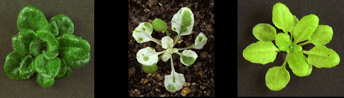

Nottingham Arabidopsis Stock Centre Update

Nottingham Arabidopsis Stock Centre
Dept Life Science
Nottingham University
Nottingham
NG7 2RD
UK
Tel +44 1159 791216
Fax +44 1159 513251
email arabidopsis@nottingham.ac.uk
WWW server URL= http://nasc.nott.ac.uk
New faces
We are pleased to welcome two new members to the Stock Centre. Karen Searle joined us in August to replace Tracy Osbourn who left us to take up a PhD studentship with Roger Pennell at UCL, London. We are pleased to hear that she will still be working with her favourite weed. Dave Flanders, who many of you will know from his former life in the UK Arabidopsis Programme, has also joined the team. He is here for three short months to help get several hundred images incorporated into our on-line catalogue and the Arabidopsis databases.
New stocks
We are pleased to annouce that we can now distribute the new sets of Feldmann lines as pools of 20 lines or 100 lines. This is thanks to the ABRC who have bulked the lines and sent us enough seed for us to distribute the lines directly to you.
Seed Donations
Many thanks to all of you who have donated stocks to the Centre over the last few months. These donations have included the promoter trap lines from Keith Lindsey, Patrick Gallois and MOGEN. In order to expedite the availablity of these lines, we are going bulk lines as pools in the same way as the Feldmann Collection was produced. Where a definite phenotype has been already described, these lines will be bulked individually. We shall make these seeds available as soon as possible. Release announcements will be placed on the bulletin boards, our web server and here in Weeds World.
If any of you have further stocks which you would like to donate, please feel free to place them with either Stock Centre at anytime.
Seed Ordering
Stocks can now be ordered directly through the WWW from the NASC server and from within the version of AAtDB held on the Agricultural Genome server. Stock orders are placed by simply filling in boxes on an order form which is linked to all the stocks that NASC currently distributes. This has been made possible through a collaboration with Doug Bigwood at NAL. In addition orders can be placed through AIMS.
Orders can also be placed by email, fax and telephone. Please feel free to use the ordering system that is most convenient to you.
Details of orders placed at NASC are sent once a month to ABRC to be recorded on AIMS. Orders placed to NASC which request that the details are not made available through the public domain are not forwarded to ABRC.
PGIII Demonstrations
NASC will be presenting a Poster at the Plant Genome III Conference. There will also be an opportunity to try our WWW server, as well as the many other Arabidopsis and crop-plant informatics facilities that are available. Come along to the computer demonstrations and see us there.
Nottingham telephone-code to change
Please note that the dialling code for the city of Nottingham is going to change on April 1st 1995. In order to smooth the transition between numbers, it is now possible to use the new dialling code. The Nottingham code has changed from 0602 to 0115 and 9 has been added to the front of all six-figure numbers. For those calling within the UK the new number will be 0115 9791216 and for those dialling internationally the number changes to +44 115 9791216. Similarly the fax number will become +44 115 9513251.
Suggestions/queries
If you have any suggestions for new features to add to our seed and informatics service please do not hesitate to contact me.